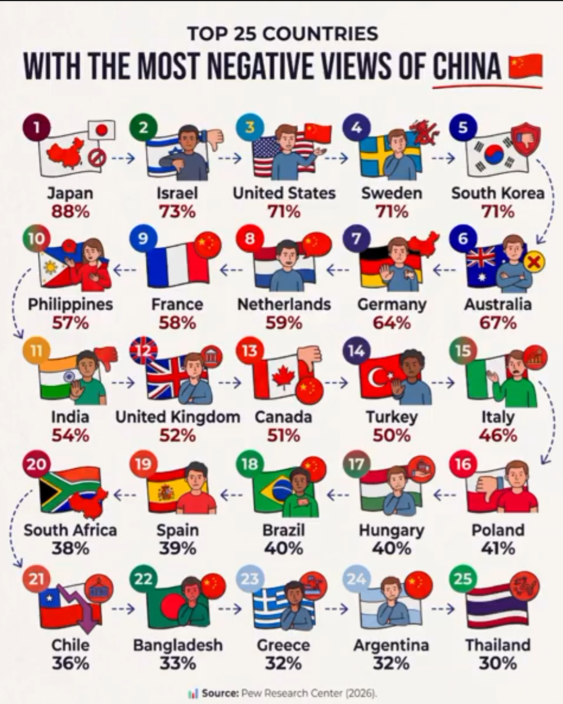

한국이 5위라고?? 못해도 3위안에는 들어갈줄 알았는데

한국이 5위라고?? 못해도 3위안에는 들어갈줄 알았는데
왜 5위밖에 안되는지 알것같네 ㅋㅋ
ㅋㅋ조선쪽 중국인이 많아서
이건 몽골이 1등 아님? 조사가 이상하네.
빨갱이들이 많아서 그런듯
베트남 태국애들이 의외로 중국 좋아함
스웨덴이 의외네
공동 3위 맞네,,
잊지마라 저 때놈들때문에 통일못함
한국 피씨방 부동의 1위 중국겜 ㅋㅋ
잘하고 있는데 중국으로 팔려서 갑자기 이관된 걸 가지고? 시진핑 개새끼 해봐
시진핑개새끼 롤수익은 중국공산당을 부유하게 한다 롤 막고 중국공산당 자금줄 타격줘야함. 롤에 돈쓰는 애들은 중국공산당 후원자. 시진핑이 도네받을때마다 곰돌이푸 분장하고 똥꼬쑈함
1렙 분탕은 과학
2-5위까지 수치가 큰 차이가 없으니까 순위도 크게 의미는 없어보임 일본은 툭 튀는거고 2-5위 다 존나 싫어하는거라
스웨덴은 중국의 천안문, 신장위구르, 티베트에 대해 가장 큰 목소리를 내는 나라임.
반면에 태국은 경제 자체가 중국에 복속되어 있음
중국일대일로 사업에서 거의 유일하게 큰 수혜를 보는 나라가 태국이기도 함.
한국은 친중이 존재하는 나라인데 5위도 높은거지
더 분발해야겠네
우리가 일본한테 짐?
고작 71%??